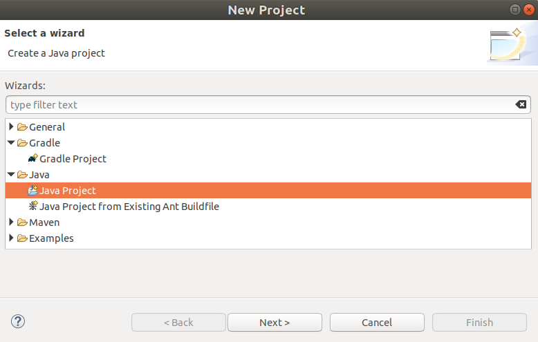
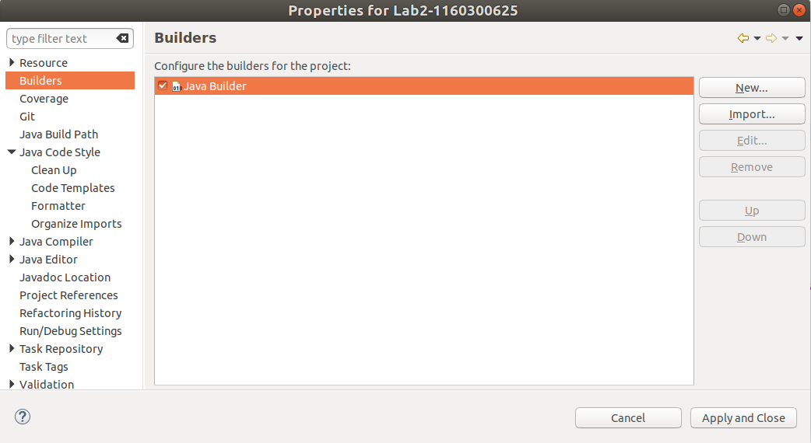
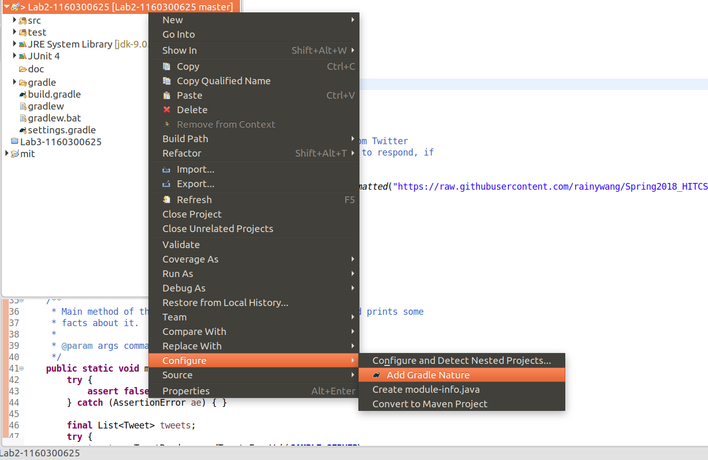
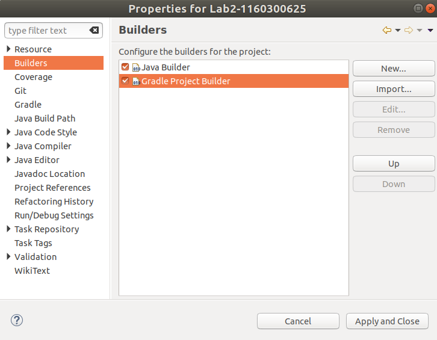

本文主要介绍了 Gradle 的使用，同时对相应的用于持续集成构建的 travis.yml 文件配置进行解读。
Gradle
安装
进入 Release1 界面下载 Gradle ，解压到新创建的/opt/gradle下：
$ sudo mkdir /opt/gradle |
设置环境变量：
# 暂时设置 |
查看 Gradle 版本：
$ gradle -v |
前面五行 warning 是因为最新的 java 9 为了更好地实现隐藏，后续将限制对java.lang.Object.finalize()的访问，而 Gradle 自带的 Groovy 库中的org.codehaus.groovy.reflection.CachedClass试图访问这个方法。2 3 4 5
由于问题出在 Groovy 上，Gradle 无法去修复，只好直接镇压这个警告。
$ sudo vi /opt/gradle/gradle-4.6/bin/gradle |
- With
--add-exportsthe package is exported, meaning all public types and members therein are accessible at compile and run time. - With
--add-opensthe package is opened, meaning all types and members (not only public ones!) therein are accessible at run time.4 - When setting
$readingmoduleto ALL-UNNAMED, all code from the class path can access that package.3
创建 Gradle Builds6 7 8
在项目根目录下，使用init命令初始化。
$ gradle init |
vi gradle/wrapper/gradle-wrapper.properties |
gradle 默认的 java 源文件目录是 src/main/java，比如这样的目录结构：
$ tree |
在build.gradle中加入 apply plugin: 'java'，进行 build 结果如下：
$ gradle build |
而我当前项目的目录结构与上面完全不同。
$ tree -L 2 |
build.gradle中可以设置许多属性，包括修改源文件目录，运行build properties可以查看所有属性。在官方文档中查到有这两个属性：
-
SourceSet
public interface SourceSet
ASourceSetrepresents a logical group of Java source and resources.
See the example below howSourceSet‘main’ is accessed and how theSourceDirectorySet‘java’ is configured to exclude some package from compilation.apply plugin: 'java'
sourceSets {
main {
java {
exclude 'some/unwanted/package/**'
}
}
} -
SourceDirectorySet
public interfaceSourceDirectorySet
extendsFileTree,PatternFilterable,Named,Describable
ASourceDirectorySetrepresents a set of source files composed from a set of source directories, along with associated include and exclude patterns.SourceDirectorySetextendsFileTree. The contents of the file tree represent the source files of this set, arranged in a hierarchy. The file tree is live and reflects changes to the source directories and their contents.
根据官方文档的说明9，修改build.gradle中 java 源文件目录。
apply plugin: 'java' |
这样就可以成功 build 了。
build 输出（点击展开/折叠）
$ gradle build
BUILD SUCCESSFUL in 0s
2 actionable tasks: 2 up-to-date
$ jar tvf build/libs/Lab2-1160300625.jar
0 Tue Apr 03 12:41:58 CST 2018 META-INF/
25 Tue Apr 03 10:33:56 CST 2018 META-INF/MANIFEST.MF
0 Tue Apr 03 12:41:58 CST 2018 P1/
0 Tue Apr 03 12:41:58 CST 2018 P1/graph/
4629 Tue Apr 03 12:41:58 CST 2018 P1/graph/ConcreteEdgesGraph.class
5161 Tue Apr 03 12:41:58 CST 2018 P1/graph/ConcreteVerticesGraph.class
1644 Tue Apr 03 12:41:58 CST 2018 P1/graph/Edge.class
744 Tue Apr 03 12:41:58 CST 2018 P1/graph/Graph.class
2479 Tue Apr 03 12:41:58 CST 2018 P1/graph/Vertex.class
0 Tue Apr 03 12:41:58 CST 2018 P1/poet/
2982 Tue Apr 03 12:41:58 CST 2018 P1/poet/GraphPoet.class
1364 Tue Apr 03 12:41:58 CST 2018 P1/poet/Main.class
0 Tue Apr 03 12:41:58 CST 2018 P2/
2696 Tue Apr 03 12:41:58 CST 2018 P2/FriendshipGraph.class
997 Tue Apr 03 12:41:58 CST 2018 P2/Person$Color.class
555 Tue Apr 03 12:41:58 CST 2018 P2/Person.class
0 Tue Apr 03 12:41:58 CST 2018 P3/
715 Tue Apr 03 12:41:58 CST 2018 P3/BusSegment.class
3180 Tue Apr 03 12:41:58 CST 2018 P3/Itinerary.class
3908 Tue Apr 03 12:41:58 CST 2018 P3/RoutePlanner.class
179 Tue Apr 03 12:41:58 CST 2018 P3/RoutePlannerBuilder.class
4096 Tue Apr 03 12:41:58 CST 2018 P3/RoutePlannerBuilderImplementation.class
1157 Tue Apr 03 12:41:58 CST 2018 P3/RoutePlannerImplementation$Color.class
3623 Tue Apr 03 12:41:58 CST 2018 P3/RoutePlannerImplementation.class
317 Tue Apr 03 12:41:58 CST 2018 P3/Stop.class
2840 Tue Apr 03 12:41:58 CST 2018 P3/StopTime.class
192 Tue Apr 03 12:41:58 CST 2018 P3/TripSegment.class
654 Tue Apr 03 12:41:58 CST 2018 P3/WaitSegment.class
在 build.gradle 中加入apply plugin: 'application'，可以运行 java 程序。
apply plugin: 'application' |
$ gradle run |
接下来会根据用户输入一直运行下去，直到程序返回 0 退出。
Build 之后
最终的`build.gradle`（点击展开/折叠）
/*
* This file was generated by the Gradle 'init' task.
*
* This is a general purpose Gradle build.
* Learn how to create Gradle builds at https://guides.gradle.org/creating-new-gradle-builds/
*/
apply plugin: 'java'
/* for runnig interaction
apply plugin: 'application'
mainClassName = 'P3.RoutePlanner'
run {
// 使用标准输入
standardInput = System.in
}
*/
// Customization of MANIFEST
sourceCompatibility = 1.8
version = '1.0'
// Dependencies
repositories {
mavenCentral()
}
dependencies {
testCompile group: 'junit', name: 'junit', version: '4.+'
// or "testCompile "junit:junit:4.+"
}
sourceSets {
main {
java {
srcDirs = ['src']
}
}
test {
java {
srcDirs = ['test']
}
}
}
build 文件夹目录结构（点击展开/折叠）
$ tree build
build
├── classes
│ └── java
│ ├── main
│ │ ├── P1
│ │ │ ├── graph
│ │ │ │ ├── ConcreteEdgesGraph.class
│ │ │ │ ├── ConcreteVerticesGraph.class
│ │ │ │ ├── Edge.class
│ │ │ │ ├── Graph.class
│ │ │ │ └── Vertex.class
│ │ │ └── poet
│ │ │ ├── GraphPoet.class
│ │ │ └── Main.class
│ │ ├── P2
│ │ │ ├── FriendshipGraph.class
│ │ │ ├── Person.class
│ │ │ └── Person$Color.class
│ │ └── P3
│ │ ├── BusSegment.class
│ │ ├── Itinerary.class
│ │ ├── RoutePlannerBuilder.class
│ │ ├── RoutePlannerBuilderImplementation.class
│ │ ├── RoutePlanner.class
│ │ ├── RoutePlannerImplementation.class
│ │ ├── RoutePlannerImplementation$Color.class
│ │ ├── Stop.class
│ │ ├── StopTime.class
│ │ ├── TripSegment.class
│ │ └── WaitSegment.class
│ └── test
│ ├── P1
│ │ ├── graph
│ │ │ ├── ConcreteEdgesGraphTest.class
│ │ │ ├── ConcreteVerticesGraphTest.class
│ │ │ ├── GraphInstanceTest.class
│ │ │ └── GraphStaticTest.class
│ │ └── poet
│ │ └── GraphPoetTest.class
│ ├── P2
│ │ └── FriendshipGraphTest.class
│ └── P3
│ └── RoutePlannerTest.class
├── libs
│ └── Lab2-1160300625-1.0.jar
├── reports
│ └── tests
│ └── test
│ ├── classes
│ │ ├── P1.graph.ConcreteEdgesGraphTest.html
│ │ ├── P1.graph.ConcreteVerticesGraphTest.html
│ │ ├── P1.graph.GraphStaticTest.html
│ │ ├── P1.poet.GraphPoetTest.html
│ │ ├── P2.FriendshipGraphTest.html
│ │ └── P3.RoutePlannerTest.html
│ ├── css
│ │ ├── base-style.css
│ │ └── style.css
│ ├── index.html
│ ├── js
│ │ └── report.js
│ └── packages
│ ├── P1.graph.html
│ ├── P1.poet.html
│ ├── P2.html
│ └── P3.html
├── test-results
│ └── test
│ ├── binary
│ │ ├── output.bin
│ │ ├── output.bin.idx
│ │ └── results.bin
│ ├── TEST-P1.graph.ConcreteEdgesGraphTest.xml
│ ├── TEST-P1.graph.ConcreteVerticesGraphTest.xml
│ ├── TEST-P1.graph.GraphStaticTest.xml
│ ├── TEST-P1.poet.GraphPoetTest.xml
│ ├── TEST-P2.FriendshipGraphTest.xml
│ └── TEST-P3.RoutePlannerTest.xml
└── tmp
├── compileJava
├── compileTestJava
└── jar
└── MANIFEST.MF
在 Eclipse 中用 Gradle Builder 替代默认的 Java Builder
之前创建项目时选的是 Java Project 而不是 Gradle Project ，因此 Eclipse 并不会使用 Gradle Builder 去运行项目，右键点击项目名，在 Properties > Builders 下可以看到现在项目的 Builder 是 Java Builder。
|  |  |
|---|---|
要想把 Java Project 转换为 Gradle Project ，先要在 Help -> Eclipse Market 中搜索并安装Buildship Gradle Intergration 2.0，在最新版的 Eclipse 已经预装了这个插件。然后在项目右键菜单中选择 Configure > Add Gradle Nature。

现在再打开 Properties > Builders 将可以看到增加了 Gradle Project Builder ，可以顺手删掉 Java Builder 了，删不掉的话可以直接修改根目录的 .project文件，删除与 Java Builder 相关的定义。

在以后创建新项目的时候可以直接选择 Gradle Project ，这样可以免去后续的烦恼。 Eclipse + Gradle 用起来的感觉跟 Android Studio 一样，有什么依赖直接在 build.gradle中声明即可， Gradle 会自动联网下载依赖。当一个项目在合作者之间传递时，这种方法最简洁，也能避免很多依赖错误。
注意：如果在 build.gradle 新加入了依赖（dependencies），应该在 Eclipse 中更新依赖，具体方法：右击项目 -> Gradle -> Refresh Gradle Project，见下图。
最终我的 .project 文件（点击展开/折叠）
<projectDescription>
<name>Lab2-1160300625</name>
<comment></comment>
<projects>
</projects>
<buildSpec>
<buildCommand>
<name>org.eclipse.buildship.core.gradleprojectbuilder</name>
<arguments>
</arguments>
</buildCommand>
</buildSpec>
<natures>
<nature>org.eclipse.jdt.core.javanature</nature>
<nature>org.eclipse.buildship.core.gradleprojectnature</nature>
</natures>
</projectDescription>
.classpath 文件：（点击展开/折叠）
<classpath>
<classpathentry kind="src" output="bin/main" path="src">
<attributes>
<attribute name="gradle_scope" value="main"/>
<attribute name="gradle_used_by_scope" value="main,test"/>
</attributes>
</classpathentry>
<classpathentry kind="src" output="bin/test" path="test">
<attributes>
<attribute name="gradle_scope" value="test"/>
<attribute name="gradle_used_by_scope" value="test"/>
</attributes>
</classpathentry>
<classpathentry kind="con" path="org.eclipse.jdt.launching.JRE_CONTAINER/org.eclipse.jdt.internal.debug.ui.launcher.StandardVMType/JavaSE-1.8/"/>
<classpathentry kind="con" path="org.eclipse.buildship.core.gradleclasspathcontainer"/>
<classpathentry kind="output" path="bin/default"/>
</classpath>
Travis CI
在项目根目录下新建一个.travis.yml文件。10 11
文件内容（点击展开/折叠）
language: java
jdk: oraclejdk8
before_install: chmod +x gradlew
## Travis CI installs dependencies using
# gradle assemble
## You can specify your own script to run to install whatever dependencies
## your project requires
# install: ./install-dependencies.sh
## If your project contains a build.gradle file in the repository root,
## Travis CI builds your project with Gradle:
# gradle check
## If your project also includes the gradlew wrapper script in the
## repository root, Travis CI uses that wrapper instead:
# ./gradlew check
## To use a different script command:
# script: bundle exec thor build
## or:
# script:
# - bundle exec rake build
# - bundle exec rake builddoc
## A peculiarity of dependency caching in Gradle means that to avoid
## uploading the cache after every build you need to add the following
## lines to your .travis.yml
before_cache:
- rm -f $HOME/.gradle/caches/modules-2/modules-2.lock
- rm -fr $HOME/.gradle/caches/*/plugin-resolution/
cache:
directories:
- $HOME/.gradle/caches/
- $HOME/.gradle/wrapper/
-
languge: java使用 java 语言
-
jdk: oraclejdk8使用
oraclejdk8进行测试。可以定义多个不同的jdk版本。 -
before_install: chmod +x gradlew由于在
script阶段，默认运行./gradlew check。如果不加入这句命令， Travis-CI 会出现下面的错误：$ ./gradlew assemble
/home/travis/.travis/job_stages: line 236: ./gradlew: Permission denied
The command "eval ./gradlew assemble " failed. Retrying, 2 of 3.
/home/travis/.travis/job_stages: line 236: ./gradlew: Permission denied
The command "eval ./gradlew assemble " failed. Retrying, 3 of 3.
/home/travis/.travis/job_stages: line 236: ./gradlew: Permission denied
The command "eval ./gradlew assemble " failed 3 times.
The command "./gradlew assemble" failed and exited with 126 during .
Your build has been stopped. -
install安装项目所需的依赖。
-
script运行 build 脚本。
在 Gradle 部分，我为了免去下载环节，修改了
gradle/wrapper/gradle-wrapper.properties，在这里要改回来：distributionUrl=https\://services.gradle.org/distributions/gradle-4.6-bin.zip
-
before_cache清除缓存。
-
cache缓存数据，加速下次 build 。
更详细的说明参见 The Build Lifecycle。
总结
- 通过本地 Gradle build，生成可复用的 jar 文件，并进行测试。
- 配置 Travis CI ，每次 push 到 github 时都会自动进行 build 。
参考资料
- Gradle | Releases
- Upgrade to Groovy 2.4.12 for full Java 9 compatibility · Issue #2995 · gradle/gradle · GitHub
- Java 9 Migration Guide: The Seven Most Common Challenges - blog@CodeFX
- command line arguments - What’s the difference between --add-exports and --add-opens in Java 9? - Stack Overflow
- JEP 261: Module System
- Creating New Gradle Builds
- Getting Started · Building Java Projects with Gradle
- Java Quickstart - Gradle User Manual
- The Java Plugin - Gradle User Manual
- Customizing the Build - Travis CI
- asciidoctor-gradle-examples/.travis.yml at master · asciidoctor/asciidoctor-gradle-examples · GitHub